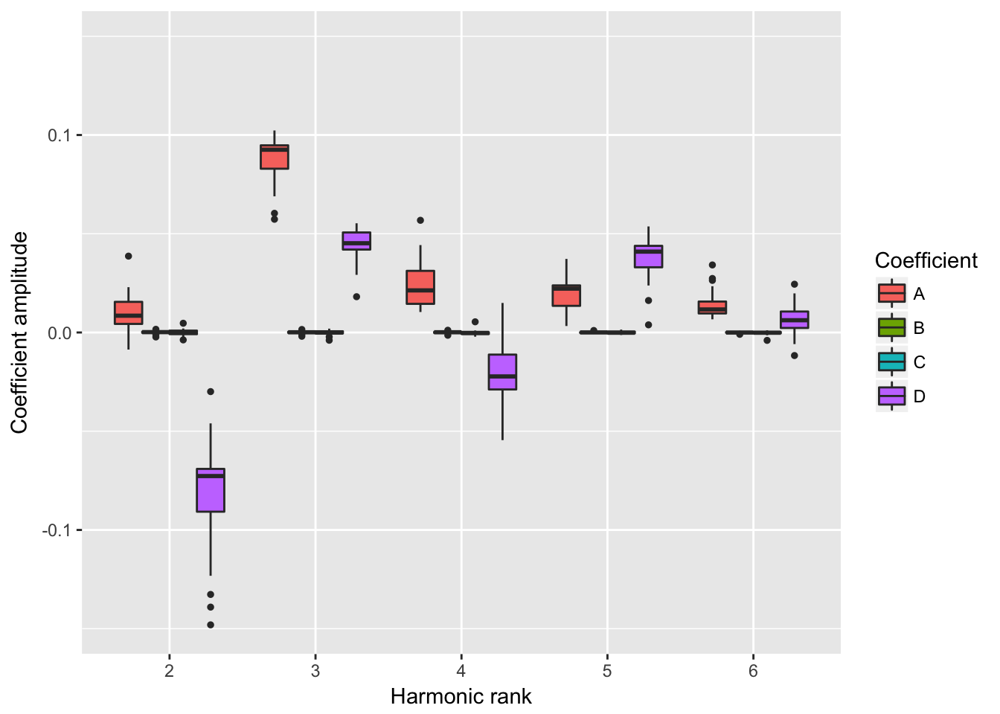
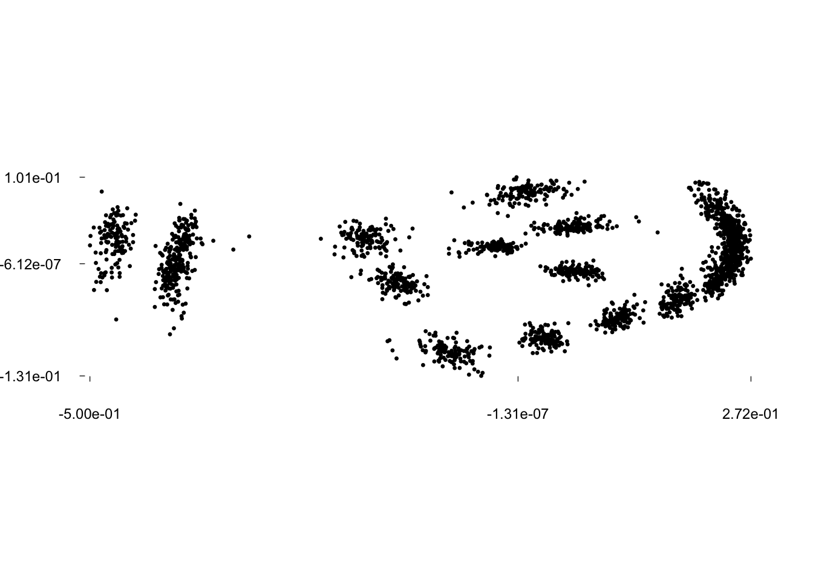
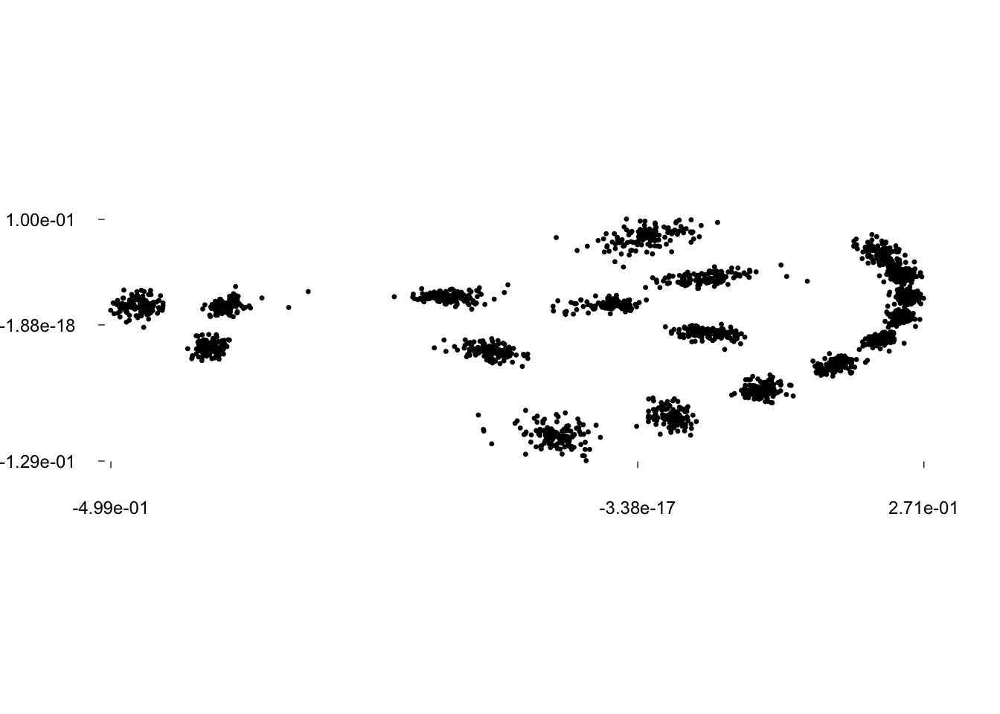
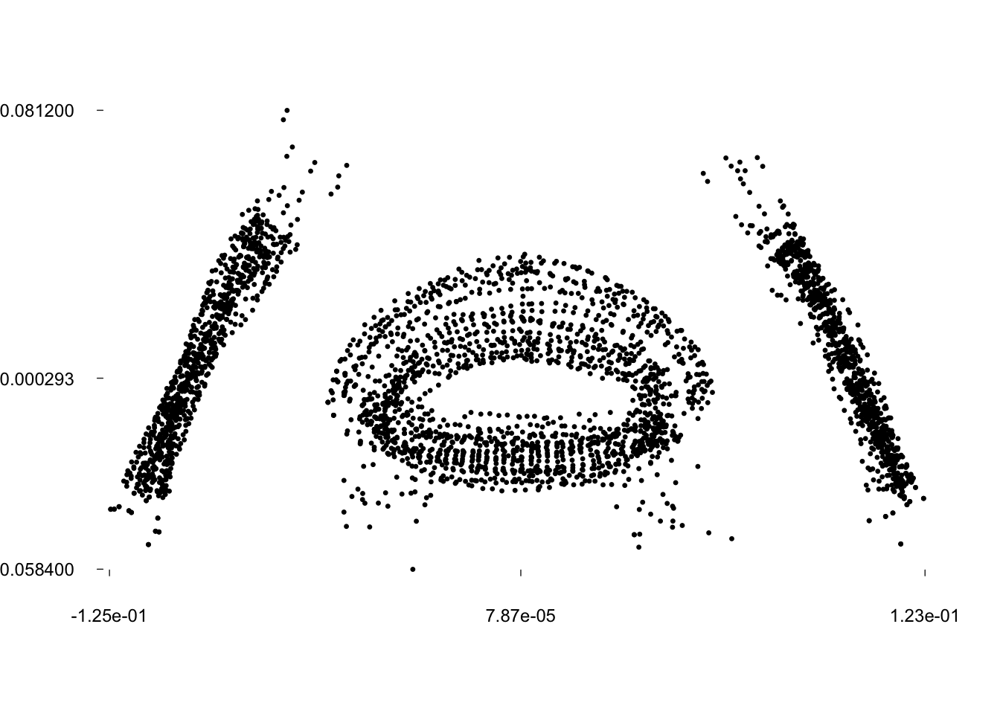
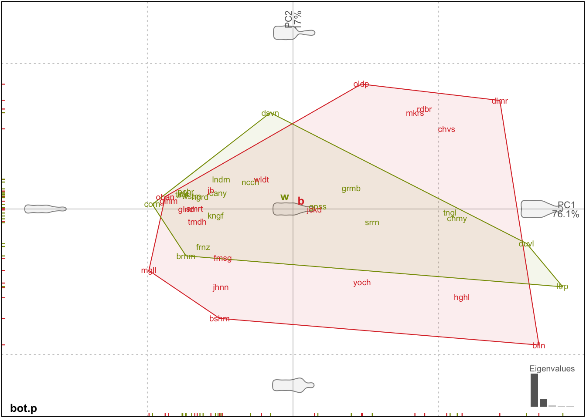
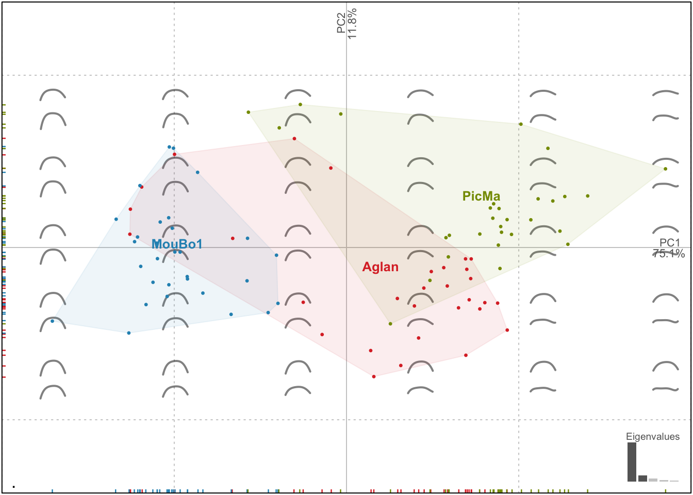
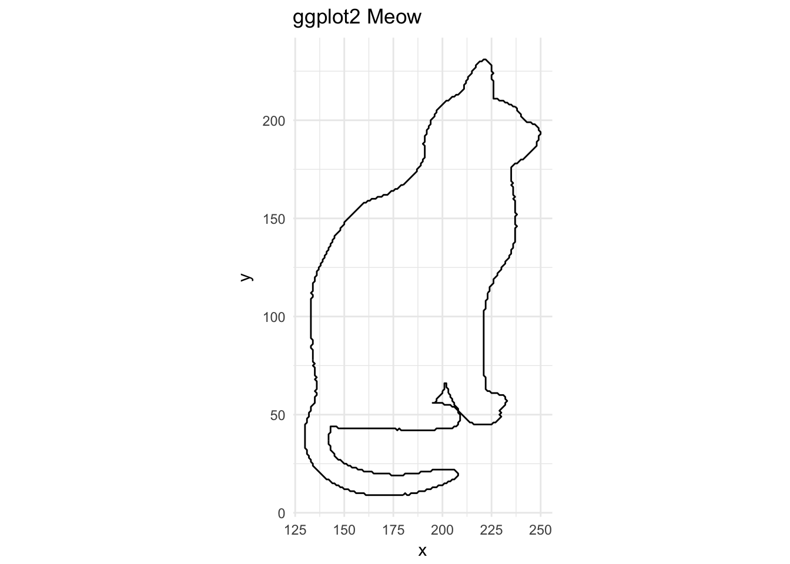

Momocs speed dating
Vincent Bonhomme
2018-03-12
Preliminaries
Abstract
Momocs aims to provide a complete and convenient toolkit for morphometrics. It is intended for scientists interested in describing quantitatively the shape, and its (co)variations, of the objects they study.
In the last decade, R has become the open-source lingua franca for statistics, and morphometrics known its so-called “revolution”. Nevertheless, morphometric analyses still have to be carried out using various software packages either dedicated to a particular morphometric and/or for which source code is mostly unavailable and/or copyrighted. Moreover, most of existing software packages cannot be extended and their bugs are hard to detect and thus correct. This situation is detrimental to morphometrics: time is wasted, analyses are restricted to available methods, and last but not least, are poorly reproducible. This impedes collaborative effort both in software development and in morphometric studies.
By gathering the common morphometric approaches in an open-source environment and welcoming contributions, Momocs is an attempt to solve this twofold problem.
Momocs hinges on the core functions published in the must-have Morphometrics with R by Julien Claude (2008), but has been further extended to allow other shape description systems. So far, configurations of landmarks, outlines and open outline analyses, along with some facilities for traditional morphometrics are implemented.
Prior to analysis, Momocs can be used to acquire and manipulate data or to import/export from/to other formats. Momocs also has the facility for a wide range of multivariate analyses and production of the companion graphics. Thus a researcher will find that just a few lines of code will provide initial results, but the methods implemented can be finely tuned and extended according to the user’s needs.
- If you use it, cite it:
citation("Momocs"). - This citation refers to an obsolete version of Momocs, only handling outline analyses. The next companion and seminal paper is submitted.
Survival tips
- This vignette introduces Momocs; more specific help can be find in function’s help files, for instance
?efourier. - There is a much nicer online version of this manual that can be accessed from the console with, e.g.
Momocs_help("efourier"). - Feel free to contribute to Momocs through GitHub: report issues, ask for new features, share data and methods, correct typos, write better vignettes, helpfiles, or whatever pleases you. If you have never heard of GitHub, that’s definitely worth a look.
- Feel free to drop me a line, should you need a hand or would like to collaborate with me:
bonhomme.vincent@gmail.com.
Get, install and use it
First, of all, let’s download the last version of Momocs. You will need to install the devtools package to get it from my GitHub repository :
install.packages("devtools")
devtools::install_github("MomX/Momocs")The typical install_packages("Momocs") will get you the last CRAN version of Momocs, but the GitHub version is preferred as Momocs is still under active development.
We can start using Momocs, as long as it has been loaded using:
library(Momocs)Design
Keywords used all accross Momocs are introduced here in bold.
Morphometrics is the ugly job of turning beautiful shapes into quantitative variables. Just kidding, that’s pretty exciting.
A shape is defined as a collection of (x; y) coordinates. No 3D yet but different families can be handled: outlines, here in a first-quarter moon ; open outlines, here is the sterile valve of an olive stone; configuration of landmarks; here, hologous points from a mosquito wing.


They are all single shapes defined by a matrix of (x; y) coordinates; here are the first points of the moon:
shapes[18] %>% head()## [,1] [,2]
## [1,] 200 50
## [2,] 199 49
## [3,] 198 49
## [4,] 197 50
## [5,] 196 50
## [6,] 195 49A few dozens of operations on single shapes are implemented such as: plotting, centering, calculating areas, etc. These 70+ operations can be accessed with apropos("coo_"). But working on single shapes is quite boring.
Shapes can be organized into a collection of coordinates: a Coo object that carries:
- a component named
$coo, alistof shapes (asmatrix.ces); - most of the time, a component named
$fac, adata.frameto store covariates, eitherfactors ornumerics; - possibly, other components of interest.
One can do several things with a Coo object: visualize it, apply morphometric operations, handle the data it contains, but in the end, a __ morphometric method__ will turn coordinates into coefficients.
Such morphometric operation on coordinates produce a collection of coefficients: a Coe object that carries:
- a component named
$coe, amatrixof coefficients; - if present in
Coo,$facis inherited; - possibly, other components of interest.
This can be summarized as follows:
Coo |
+ | Morphometric method | = | Coe |
|---|---|---|---|---|
(x; y) coordinates |
+ | appropriate method | = | quantitative variables |
Coo objects are collections of coordinates that become Coe objects when an appropriate morphometric method is applied on them.
Some operations on Coo/Coe are generic in that they do not depend of the nature of the shape. For instance, centering a configuration of landmarks or an outline, or calculating their centroid size is, mathematically, the same generic operation. But some operations on shapes are specific to a peculiar family. For instance, calculating elliptical Fourier transforms on a configuration of landmarks would make no sense.
Momocs implement this desirable behavior and defines classes and subclasses, as S3 objects.
Coo |
Morphometrics methods | Coe |
|---|---|---|
OutCoo (outlines) |
efourier, rfourier, sfourier, tfourier
|
OutCoe |
OpnCoo (open outlines) |
npoly, opoly, dfourier
|
OpnCoe |
LdkCoo (configuration of landmarks) |
fgProcrustes, slide
|
LdkCoe |
In other words:
- any collection of shapes belongs to (pick one)
{OutCoo, OpnCoo, LdkCoo}and is also aCooobject; - generic and specific methods can be applied to it
- a collection of coefficients is obtain and belongs to (pick one)
{OutCoe, OpnCoe, LdkCoe}and is also aCoeobject.
Finally, generic and specific operations can be applied to the Coe objects, chiefly multivariate methods, capitalicized: PCA, LDA, CLUST, MANOVA(and MANCOVA), MSHAPES, KMEANS, etc.
Overall, Momocs implements a simple and consistent grammar that is detailed below. Also, if you’re familiar with modern R and the Hadley-verse, you should feel home as ggplot2 graphics, dplyr verbs and magrittr pipes are implemented.
Single shapes
Let’s load one of the Momocs datasets, some various outlines (an Out object):
shapes # prints a brief summary
panel(shapes, names=TRUE) # base graphics## An Out object with:
## - $coo: 30 outlines (836 +/- 255 coordinates, all closed)
## - $fac: No classifier defined in $facshapes is one of the datasets bundled with Momocs. It’s (“lazy”) loaded in memory as soon as you call it, no need for data(shapes). To see all Momocs’ datasets, try data(package="Momocs"). These datasets are all Coo objects (try class(bot)), ie collection of shapes.
One can do many things on a Coo object, as above, e.g. printing a summary of it (just by typing its name in the console), plotting a family picture with panel or panel2. Note the 2 that refers to a ggplot2 variant of a given plot.
So far, we’re interested in single shapes so let’s extract the 4th shape from shapes, using the traditional syntax. We plot it with coo_plot that comes with several options for plotting all families of shapes.
shp <- shapes[4]
coo_plot(shp)
# coo_plot is the base plotter for shapes
# but it can be finely customized, see ?coo_plot
coo_plot(shp, col="grey80", border=NA, centroid=FALSE, main="Meow")Let’s now do some basic operations on this shape. They all named coo_* and you can have the full list with apropos("coo_"). coo_* family encompasses:
- geometric operations (such as centering, scaling, etc.)
- plotting functions
- scalar descriptors of shape (such as area, perimeter, circularity, rectilinearity, etc.)
- various other operations on a single shape.
coo_plot(coo_center(shp), main="centered Meow")coo_plot(coo_sample(shp, 64), points=TRUE, pch=20, main="64-pts Meow")Momocs makes use of maggritr’s pipe operators. A nice introduction can be found there. magrittr requires a (very small) cerebral gymnastics at the beginning but the benefits are huge, for defining moprhometric pipelines in Momocs but also for R as a whole. It makes things clearer, it: saves typing; reduces intermediate variable assignation; reads from left to right; substantiates the pipe we (should) have in mind. magrittr’s pipes are already loaded with Momocs.
shapes[4] %>% coo_smooth(5) %>% coo_sample(64) %>% coo_scale() %>% coo_plot()# pipes can be turned into custom function
cs64 <- function(x) x %>% coo_sample(64) %>% coo_scale() %>% coo_center()
shapes[4] %>% cs64 %>% coo_plot() # note the axesThe most familiar operation can directly be applied on Coo objects:
bot %>%
coo_center %>% coo_scale %>%
coo_alignxax() %>% coo_slidedirection("up") %T>%
print() %>% stack()
## An Out object with:
## - $coo: 40 outlines (162 +/- 21 coordinates, all unclosed)
## - $fac: 1 classifier:
## 'type' (factor 2): beer, whisky.Morphometrics
Outline analysis
A word about data import: you can extract outlines from a list of black masks over a white background, as .jpg images with import_jpg. Have a look to helpfiles (import_jpg and import_jpg1) for more details. Here we do not bother with import since we will use the bottles outlines dataset bundled with Momocs.
data(bot)
bot
panel(bot, fac="type", names=TRUE)
stack(bot)
## An Out object with:
## - $coo: 40 outlines (162 +/- 21 coordinates, all unclosed)
## - $fac: 1 classifier:
## 'type' (factor 2): beer, whisky.Here we will illustrate outline analysis with some elliptical Fourier transforms (but the less used - and tested - radii variation Fourier transforms, its variant used by Renaud et al., and tangent angle Fourier transforms are also implemented with rfourier, sfourier and tfourier respectively).
The idea behind elliptical Fourier transforms is to fit the x and y coordinates separately, that is the blue and red curves below:
coo_oscillo(bot[1], "efourier")## dx dy
## 1 0 0
## 2 3 -21
## 3 3 -32
## 4 6 -53
## 5 9 -74
## 6 11 -84
## 7 15 -105
## 8 17 -126
## 9 20 -147
## 10 22 -158
## 11 24 -179
## 12 26 -200
## 13 27 -211
## 14 27 -232
## 15 27 -253
## 16 27 -263
## 17 25 -284
## 18 23 -305
## 19 21 -316
## 20 17 -337
## 21 13 -358
## 22 11 -368
## 23 8 -389
## 24 5 -411
## 25 3 -432
## 26 3 -442
## 27 3 -463
## 28 7 -484
## 29 10 -495
## 30 22 -516
## 31 43 -532
## 32 53 -536
## 33 74 -542
## 34 95 -544
## 35 106 -546
## 36 127 -547
## 37 148 -546
## 38 159 -546
## 39 180 -545
## 40 201 -543
## 41 222 -537
## 42 232 -534
## 43 253 -521
## 44 270 -501
## 45 274 -490
## 46 278 -469
## 47 279 -448
## 48 279 -437
## 49 278 -416
## 50 278 -395
## 51 278 -385
## 52 276 -364
## 53 275 -343
## 54 274 -332
## 55 274 -311
## 56 271 -290
## 57 269 -269
## 58 268 -259
## 59 266 -237
## 60 263 -216
## 61 262 -206
## 62 260 -185
## 63 257 -164
## 64 255 -153
## 65 254 -132
## 66 253 -111
## 67 253 -101
## 68 254 -80
## 69 255 -59
## 70 258 -38
## 71 260 -27
## 72 264 -6
## 73 268 15
## 74 270 26
## 75 273 47
## 76 274 68
## 77 273 78
## 78 273 99
## 79 270 120
## 80 267 131
## 81 259 152
## 82 247 172
## 83 241 183
## 84 231 204
## 85 223 225
## 86 217 246
## 87 214 256
## 88 211 277
## 89 209 298
## 90 208 309
## 91 205 330
## 92 203 351
## 93 202 361
## 94 200 383
## 95 198 404
## 96 197 414
## 97 194 435
## 98 192 456
## 99 191 467
## 100 196 488
## 101 192 507
## 102 195 526
## 103 189 535
## 104 168 540
## 105 146 541
## 106 136 541
## 107 115 540
## 108 94 539
## 109 83 537
## 110 68 521
## 111 75 504
## 112 72 494
## 113 74 473
## 114 73 452
## 115 73 441
## 116 71 420
## 117 68 399
## 118 66 378
## 119 66 367
## 120 64 346
## 121 61 325
## 122 59 315
## 123 59 294
## 124 57 273
## 125 56 262
## 126 52 241
## 127 45 220
## 128 42 210
## 129 32 188
## 130 22 167
## 131 17 157
## 132 8 137
## 133 1 116
## 134 -3 95
## 135 -4 84
## 136 -4 63
## 137 -3 42
## 138 -2 32Graphically, this is equivalent to fitting Ptolemaic ellipses on the plane:
Ptolemy(bot[1])Let’s calibrate the number of harmonics required. More details can be found in their respective help files.
calibrate_deviations(bot)
## 90% 95% 99% 99.9%
## 5 5 10 17Here, 10 harmonics gather 99% of the harmonic power. If you’re happy with this criterium, you can even omit nb.h in efourier: that’s the default parameter, returned with a message.
bot.f <- efourier(bot, nb.h=10)
bot.f## An OutCoe object [ elliptical Fourier analysis ]
## --------------------
## - $coe: 40 outlines described, 10 harmonics
## - $fac: 1 classifier:
## 'type' (factor 2): beer, whisky.bot.f is a Coe object (and even an OutCoe), you have have a look to the help files to go deeper into Momocs classes.
Let’s have a look to the amplitude of fitted coefficients.
hist(bot.f, drop=0)boxplot(bot.f, drop=1)
Now, we can calculate a PCA on the Coe object and plot it, along with morphospaces, calculated on the fly.
bot.p <- PCA(bot.f)
class(bot.p) # a PCA object, let's plot it
plot(bot.p)
## [1] "PCA" "prcomp"Amazing but we will do much better afterwards.
The question of normalization in elliptical Fourier transforms is central. Normalization can either be done beforehand, with geometric operations, or afterhand, directly on the matrix of Fourier coefficients and consuming the first harmonic. In brief, I’m not a big fan of the “use the first harmonics and see what happens” strategy, as some biases can be introduced (and actually quite hard to detect), particularly on rounded/ellipsoid shapes. More can be found in ?efourier.
Here is an example of such bias from the molars dataset generously shared by Cornu and Detroit.
# raw molars dataset
stack(molars, title = "Non-aligned molars")
# Procrustes-aligned and slided molars
mol.al <- fgProcrustes(molars, tol = 1e-4) %>% coo_slidedirection("left")
stack(mol.al, title="Aligned molars")
# Now compare PCA and morphospace using the 1st harmonic alignment
molars %>% efourier(norm=TRUE) %>% PCA() %>% plot("type")

Finally, you can drop some harmonics with rm_harm. And methods that removes the bilateral (a)symmetry are implemented: rm_asym and rm_sym, while symmetry calculates some related indices.
Open outlines
Open outlines are curves. Methods actually implemented are:
-
npolythat fit natural polynomials; -
opolythat fit orthogonal (also called Legendre’s) polynomials; -
dfourierfor the discrete cosine transform.
Note that opoly and npoly can only be used on simple curves, curves that have at most one y for any x coordinates, at least under a given orientation. dfourier can fit complex curves, curves “that back on their feets”.
Here, we will work on the fertile valves of olive stones, a (very partial) dataset provided by my colleagues Terral, Ivorra, and others.
They have two orthogonal views (a lateral and a dorsal view). See the paper cited in ?olea for more details. Let’s explore it a bit:
olea
stack(olea, fac="view") # already aligned \o/
panel(olea, names="ind") # another family picture## An Opn object with:
## - $coo: 210 open outlines (99 +/- 4 coordinates)
## - $fac: 4 classifiers:
## 'var' (factor 4): Aglan, Cypre, MouBo1, PicMa.
## 'domes' (factor 2): cult, wild.
## 'view' (factor 2): VD, VL.
## 'ind' (factor 30): O1, O10, O11, O12, O13, O14, O15, O16, O17, O18, O19 ... + 19 more.Now, we gonna calculate opoly on it and plot the result of the PCA. Notice how consistent is the grammar and the objects obtained:
op <- opoly(olea) # orthogonal polynomials
class(op) # an OpnCoe, but also a Coe
op.p <- PCA(op) # we calculate a PCA on it
class(op.p) # a PCA object
plot(PCA(op), ~domes+var) # notice the formula interface to combine factors
## [1] "OpnCoe" "Coe"
## [1] "PCA" "prcomp"But this is perfectly wrong! We merged the two views are if they were different individuals. Momocs can first chop or filter the whole dataset to separate the two views, do morphometrics on them, and combine them afterwards.
table(olea, "view", "var")
# we drop 'Cypre' since there is no VL for 'Cypre' var
olea %>% filter(var != "Cypre") %>%
# split, do morphometrics, combine
chop(view) %>% lapply(opoly) %>% combine() %T>%
# we print the OpnCoe object, then resume to the pipe
print() %>%
# note the two views in the morphospace
PCA() %>% plot("var")
## var
## view Aglan Cypre MouBo1 PicMa
## VD 30 30 30 30
## VL 30 0 30 30
## An OpnCoe object [ combined: opoly + opoly analyses ]
## --------------------
## - $coe: 90 open outlines described
## - $baseline1: (-0.5; 0; -0.5; 0)
## - $baseline2: (0.5; 0; 0.5; 0)
## - $fac: 4 classifiers:
## 'var' (factor 3): Aglan, MouBo1, PicMa.
## 'domes' (factor 2): cult, wild.
## 'view' (factor 2): VD, VL.
## 'ind' (factor 30): O1, O10, O11, O12, O13, O14, O15, O16, O17, O18, O19 ... + 19 more.Now the PCA is done on the combination of two OpnCoe objects, each one resulting from an independant opoly call. That is the meaning of the [ combined: opoly + opoly analyses ] printed by the pipe above. Momocs can combine up to four different views.
Configuration of landmarks
_Landmarks methods are still quite experimental (i.e. not tested extensively)
Let’s have a look to graphics facilities and apply a full generalized Procrustes adjustment:
stack(wings, title = "Raw wings")
w.al <- fgProcrustes(wings)
stack(w.al, title = "Aligned wings")
ldk_chull(w.al$coo)
ldk_labels(mshapes(w.al$coo))
# try those as well
#ldk_confell(w.al$coo, col = "red")
#ldk_contour(w.al$coo)
# PCA
PCA(w.al) %>% plot(1)Sliding landmarks are supported and rely on geomorph package by D.C. Adams and E. Otarola-Castillo.
stack(chaff, title="Raw chaff")
chaff.al <- fgsProcrustes(chaff)
stack(chaff.al, title="Aligned chaff")
chaff.al %>% PCA() %>% plot(~taxa, chull.filled=TRUE)
##
|
| | 0%
|
|============= | 20%
|
|========================== | 40%
|
|======================================= | 60%
|
|==================================================== | 80%
|
|=================================================================| 100%Again, the grammar is consistent for landmarks.
Traditional morphometrics
Traditional morphometrics lose geometries: from the variables, you can’t unambiguously reconstruct the shape. Every shape is described by a combination of measurements, (inter landmark distance, quantitative variables, scalar descriptor, etc.)
Momocs provides some basics utilities to work with such objects in the TraCoe class. There is not TraCoo per se but it can be obtained from any Coo with the measure method. Let’s take the hearts dataset that comes from handdrawn heart shapes from my former colleagues at the French Intitute of Pondicherry:
hearts
panel(hearts, fac="aut", names="aut")## An Out object with:
## - $coo: 240 outlines (80 +/- 0 coordinates, all unclosed)
## - $ldk: 4 landmark(s) defined
## - $fac: 1 classifier:
## 'aut' (factor 8): ced, jeya, mat, ponnu, remi, rom, ruks, vince.Notice that there are 4 landmarks defined on them. Such landmarks on outlines can be: defined withdef_ldk(), retrieved with get_ldk(), and overall used to align outlines with fgProcrustes(). You can compare: hearts %>% stack() with hearts %>% fgProcrustes() %>% coo_slide(ldk=1) %>% stack().
Let’s describe these hearts with scalar descriptors: area, circularity and the distance between the 1st and the 3rd bumps of the hearts. measure is of great help. Note the loadings.
ht <- measure(hearts, coo_area, coo_circularity, d(1, 3))
ht %>% PCA() %>% plot("aut", pch=20, ellipsesax=F, ellipse=T, loadings=T)
Again, there are plenty of scalar descriptors of shape, which names starts with coo_*, apropos("coo_").
Such a TraCoe is provided in the flower dataset which is simply a rearranged iris. Once again, note the grammar consistency.
flower
flower %>% PCA() %>% plot("sp", loadings=TRUE, contour=TRUE, lev.contour=5)
## A TraCoe object --------------------
## - $coe: 150 shapes described with 4 variables
## - $fac: 1 classifier:
## 'sp' (factor 3): setosa, versicolor, virginica.Note that, by default, PCA on TraCoe object first centers and scales variables. This can be changed, see ?PCA.
Multivariate statistics
This section will mainly be illustrated with bot, and consequently outline analysis, but it works the same on any Coe object, resulting from open outlines, configuration of landmarks, traditional morphometrics, etc.
bot.f <- efourier(bot)
PCA: Principal Component Analysis
Let’s see the main components of shape variability with a Principal Component Analysis.
bot.p <- PCA(bot.f)
plot(bot.p)Morphological spaces are reconstructed on the fly with plot.PCA. We call it plot.PCA because it uses the familiar plot but on the particular PCA class (type class(bot.p)). We may want to display the two groups saved in bot$fac. Just type the id of the column or its name.
plot(bot.p, "type") # equivalent to plot(bot.p, 1)plot.PCA has many arguments and examples below will give a glimpse, but see ?plot.PCA for the full list.
plot(bot.p, 1, ellipses=TRUE, ellipsesax = FALSE, pch=c(4, 5))
plot(bot.p, 1, chull=TRUE, pos.shp = "full_axes", abbreviate.labelsgroups = TRUE, points=FALSE, labelspoints = TRUE)
plot(bot.p, 1, pos.shp="circle", stars=TRUE, chull.filled=TRUE, palette=col_spring)
You have a ggplot2 alternative, that is not completely consistent:
# plot2(bot.p, "type") # deprecated for the momentAnd other helper functions for the PCA class:
scree(bot.p)
scree_plot(bot.p)boxplot(bot.p, 1)
PCcontrib(bot.p)## # A tibble: 10 x 3
## axis proportion cumsum
## <ord> <dbl> <dbl>
## 1 1 0.761 0.761
## 2 2 0.170 0.931
## 3 3 0.0294 0.960
## 4 4 0.0135 0.974
## 5 5 0.00860 0.982
## 6 6 0.00719 0.990
## 7 7 0.00306 0.993
## 8 8 0.00190 0.994
## 9 9 0.00159 0.996
## 10 10 0.00122 0.997By the way, you can use Momocs plotters to plot non-morphometric datasets. Using a TraCoe object is an option, but PCA also works fine. Let’s see an example with iris dataset:
# or
PCA(iris[, -5], fac=data.frame(sp=iris$Species)) %>%
plot("sp", chull=TRUE, ellipses=TRUE, conf_ellipses = 0.9)
LDA: Linear Discriminant Analysis
We can also calculate a Linear Discriminant Analysis on the PCA scores, or on the Coe object, directly on the matrix of coefficients (and results may be better yet we may encounter collinearity between variables). Try the following:
#LDA(bot.f, 1)
# we work on PCA scores
bot.l <- LDA(bot.p, 1)
# print a summary, along with the leave-one-out cross-validation table.
bot.l
# a much more detailed summary
bot.l %>% summary
# plot.LDA works pretty much with the same grammar as plot.PCA
# here we only have one LD
plot(bot.l)
# plot the cross-validation table
plot_CV(bot.l) # tabular version
plot_CV(bot.l, freq=TRUE) # frequency table
plot_CV2(bot.l) # arrays versionFinally, if you need to classify using LDA methods, see classify.
MANOVA: Multivariate Analysis of (co)variace
We can test for a difference in the distribution of PC scores with:
MANOVA(bot.p, "type")## Df Hotelling-Lawley approx F num Df den Df Pr(>F)
## fac 1 2.8388 12.977 7 32 8.88e-08 ***
## Residuals 38
## ---
## Signif. codes: 0 '***' 0.001 '**' 0.01 '*' 0.05 '.' 0.1 ' ' 1We can also calculate pairwise combination between every levels of a fac. Here we just have two levels, so a single pairwise combination but the syntax is:
MANOVA_PW(bot.p, "type")## $stars.tab
## beer whisky
## beer ***
##
## $summary (see also $manovas)
## Df Pillai approx F num Df den Df Pr(>F)
## beer - whisky 1 0.7395 12.98 7 32 8.88e-08If we want a MANCOVA instead :
bot %<>% mutate(cs=coo_centsize(.))
bot %>% efourier %>% PCA %>% MANOVA("cs")## Df Hotelling-Lawley approx F num Df den Df Pr(>F)
## fac 1 0.32229 1.4733 7 32 0.212
## Residuals 38
CLUST: Hierarchical clustering
A hierarchical classification now. It relies on dist + hclust + ape::plot.phylo.
CLUST(bot.p, 1)Monophyly is plotted by default. Many options can be found in ?CLUST
KMEANS: K-means clustering
A very minimal k-means clustering is implemented:
KMEANS(bot.p, centers = 5)
## K-means clustering with 5 clusters of sizes 6, 5, 5, 18, 6
##
## Cluster means:
## PC1 PC2
## 1 0.10184224 -0.028875902
## 2 0.02497106 -0.006671549
## 3 0.06730453 0.050371247
## 4 -0.04433327 0.008000365
## 5 -0.04573875 -0.031541607
##
## Clustering vector:
## brahma caney chimay corona deusventrue
## 5 4 1 4 4
## duvel franziskaner grimbergen guiness hoegardeen
## 1 5 2 2 4
## jupiler kingfisher latrappe lindemanskriek nicechouffe
## 4 4 1 4 4
## pecheresse sierranevada tanglefoot tauro westmalle
## 4 2 1 4 4
## amrut ballantines bushmills chivas dalmore
## 4 1 5 3 3
## famousgrouse glendronach glenmorangie highlandpark jackdaniels
## 5 4 4 1 2
## jb johnniewalker magallan makersmark oban
## 4 5 5 3 4
## oldpotrero redbreast tamdhu wildturkey yoichi
## 3 3 4 4 2
##
## Within cluster sum of squares by cluster:
## [1] 0.006121728 0.001916822 0.002720829 0.006537571 0.001860776
## (between_SS / total_SS = 89.4 %)
##
## Available components:
##
## [1] "cluster" "centers" "totss" "withinss"
## [5] "tot.withinss" "betweenss" "size" "iter"
## [9] "ifault"
mshapes: Mean shapes
We can retrieve the mean shapes, group wise (if a fac is specified), or the global mean shape (if omitted). It works from the Coe object:
# mean shape, per group
bot.ms <- mshapes(bot.f, 1)
beer <- bot.ms$shp$beer %T>% coo_plot(border="blue")
whisky <- bot.ms$shp$whisky %T>% coo_draw(border="red")
legend("topright", lwd=1,
col=c("blue", "red"), legend=c("beer", "whisky"))We can also plot a pairwise comparison of them:
leaves <- shapes %>% slice(grep("leaf", names(shapes))) %$% coo
leaves %>% plot_mshapes(col2="#0000FF")
Manipulating objects
dplyr verbs
One common yet boring task of morphometrics consists in handling datasets: add new information, remove some individuals, etc.
Momocs adapts dplyr verbs to its objects, and add new ones. If you have never heard of dplyr, let’s have a look to its introduction there, this may change your (R) life.
Basics verbs are implemented; try the following:
data(olea)
olea## An Opn object with:
## - $coo: 210 open outlines (99 +/- 4 coordinates)
## - $fac: 4 classifiers:
## 'var' (factor 4): Aglan, Cypre, MouBo1, PicMa.
## 'domes' (factor 2): cult, wild.
## 'view' (factor 2): VD, VL.
## 'ind' (factor 30): O1, O10, O11, O12, O13, O14, O15, O16, O17, O18, O19 ... + 19 more.# slice: select individuals based on their position
slice(olea, 1:5)## An Opn object with:
## - $coo: 5 open outlines (99 +/- 4 coordinates)
## - $fac: 4 classifiers:
## 'var' (factor 1): Aglan.
## 'domes' (factor 1): cult.
## 'view' (factor 2): VD, VL.
## 'ind' (factor 3): O10, O11, O12.slice(olea, -(1:100))## An Opn object with:
## - $coo: 110 open outlines (99 +/- 4 coordinates)
## - $fac: 4 classifiers:
## 'var' (factor 2): MouBo1, PicMa.
## 'domes' (factor 2): cult, wild.
## 'view' (factor 2): VD, VL.
## 'ind' (factor 30): O1, O10, O11, O12, O13, O14, O15, O16, O17, O18, O19 ... + 19 more.# filter: select individual based on a logical condition
filter(olea, domes=="cult", view!="VD")## An Opn object with:
## - $coo: 60 open outlines (97 +/- 4 coordinates)
## - $fac: 4 classifiers:
## 'var' (factor 2): Aglan, PicMa.
## 'domes' (factor 1): cult.
## 'view' (factor 1): VL.
## 'ind' (factor 30): O1, O10, O11, O12, O13, O14, O15, O16, O17, O18, O19 ... + 19 more.# select: pick, reorder columns from the $fac
select(olea, 1, Ind=ind)## An Opn object with:
## - $coo: 210 open outlines (99 +/- 4 coordinates)
## - $fac: 2 classifiers:
## 'var' (factor 4): Aglan, Cypre, MouBo1, PicMa.
## 'Ind' (factor 30): O1, O10, O11, O12, O13, O14, O15, O16, O17, O18, O19 ... + 19 more.# rename: rename columns (select can also do it)
rename(olea, domesticated=domes)## An Opn object with:
## - $coo: 210 open outlines (99 +/- 4 coordinates)
## - $fac: 4 classifiers:
## 'var' (factor 4): Aglan, Cypre, MouBo1, PicMa.
## 'domesticated' (factor 2): cult, wild.
## 'view' (factor 2): VD, VL.
## 'ind' (factor 30): O1, O10, O11, O12, O13, O14, O15, O16, O17, O18, O19 ... + 19 more.# mutate: add new columns
mutate(olea, fake=factor(rep(letters[1:2], each=105)))## An Opn object with:
## - $coo: 210 open outlines (99 +/- 4 coordinates)
## - $fac: 5 classifiers:
## 'var' (factor 4): Aglan, Cypre, MouBo1, PicMa.
## 'domes' (factor 2): cult, wild.
## 'view' (factor 2): VD, VL.
## 'ind' (factor 30): O1, O10, O11, O12, O13, O14, O15, O16, O17, O18, O19 ... + 19 more.
## 'fake' (factor 2): a, b.And you can pipe those operations: say, we only want dorsal views from domesticated individuals, for a (renamed) ‘status’ column, and drop the ‘ind’ column:
## An Opn object with:
## - $coo: 90 open outlines (100 +/- 2 coordinates)
## - $fac: 3 classifiers:
## 'var' (factor 3): Aglan, Cypre, PicMa.
## 'domesticated' (factor 1): cult.
## 'view' (factor 1): VD.This should save some headaches.
New verbs ala dplyr
New verbs are implemented: for instance, you can chop (a rougher slicing) according to a condition: this will create a list, on which you can apply further operations, then combine it back. This is particularly useful when you want to apply independant treatments to different partitions, eg orthogonal views of your model. Prior to this, we can use table to cross-tabulate data from $fac. We could have done the first step of what follows with rm_uncomplete that drops (if any) missing data.
table(olea, "view", "var")
# we drop 'Cypre' since there is no VL for 'Cypre' var
olea %>% filter(var != "Cypre") %>%
# split, do morphometrics, combine
chop(view) %>% lapply(opoly) %>% combine() %>%
# note the two views in the morphospace
PCA() %>% plot("var")
## var
## view Aglan Cypre MouBo1 PicMa
## VD 30 30 30 30
## VL 30 0 30 30Also if you need some group_by operation, you can use the fac data.frame. For instance if you want to arrange based on a column and retain the top 10 shapes, then you can:
Various helpers
Some methods help, on Coe objects to: * select groups with at least a certain number of individuals in them: at_least * removes outliers : which_out * sample a given number: sample_n; * sample a given proportion: sample_frac; * generate new individuals based on calibrated Gaussian coefficient generation: breed; * generate new individuals based on permutations: perm.
Several shortcuts are implemented on Coo and Coe objects: * names returns shape names; * length returns their number; * table cross-tabulates the$fac component; * Ntable does the same job and plots a confusion matrix; * [] extracts one (or more) shape; * $ can access either a shape name or a column name for the $fac.
Try the following:
names(bot)
length(bot)
table(olea, "var", "domes")
Ntable(olea, "var", "domes")
bot[1]
bot[1:5]
bot$brahma
bot$typeBabel import/export
There are various morphometrics formats in the wild, almost as much as softwares. Momocs tries to create bridges between them, all gathered in the Babel family.
Bridges within R
You can convert from/to array, matrix, list or data.frame with the functions {a, m, l, d}2{a, m, l, d}. For instance, l2a converts a list into an array that you can use with geomorph; a2l does the inverse operation.
Imagine you want to import pupfish from geomorph as a Ldk object:
library(geomorph)
data(pupfish)
str(pupfish)
# so $coords will become $coo, and
# all other components will be turned into a data.frame to feed $fac
# with a single line
Ldk(coo=pupfish$coords %>% a2l,
fac=pupfish[-1] %>% as.data.frame())Import from StereoMorph
If you use this excellent package by Olsen to digitize landmarks and curves, you can import them, from the files produced with the functions import_StereoMorph_ldk and import_StereoMorph_curve.
Import from tps and other digitizing softwares
-
.tpsfiles can be read withimport_tps -
.ntsfiles an be read withnts2Coo(will be turned intoimport_ntssoon)
Direct build of Coe objects You’re not bound with Momocs from the “shapes” step, ie you do not have to start from Coo objects. For instance if you have a matrix of coefficients, you can directly build an OutCoe with the builder (see below). Same approach for OpnCoe and TraCoe; have a look to the help files of these builders.
# we simulate an imported matrix of coordinates, eg from a .csv
coeffs_from_the_wild <- bot %>% efourier(6) %$% coe
coeffs_in_Momocs <- OutCoe(coe=coeffs_from_the_wild, method="efourier", norm=TRUE)
coeffs_in_Momocs %>% PCA %>% plot
Import misc
- If covariables are encoded in filenames, which is a good practice, eg if you have files named
spA_group7_ind4_VL.{txt|jpg|etc.}, uself_structure; - If you need rewriting rules on your
$fac,rw_ruleis your friend; - If you need to rescale imported coordinates, see
rescale; - If you need to tie images (eg outlines) and
.txt(eg coordinates of landmarks on them), seetie_jpg_txt.
Save from R
The best way to save a Momocs object is probably to use the base save function. You can call it back afterwards with load:
save(bot, file="Bottles.rda")
# closing R, going to the beach, back at work
load("Bottles.rda") # bot is backExport from R
Any Momocs object, Coos, Coes, PCAs, etc. can be turned into a data.frame with as_df. Work with dplyr, ggplot2 is made easy and you can export it as .txt, .csv “by hand” or use the export function:
bot %>% as_df # then %>% write.table
bot %>% efourier %>% export
bot %>% efourier %>% PCA %>% exportBut, of course, you can directly access information within the Momocs objects; try the following:
# from Coo objects
bot$coo # list of matrices (of xy coordinates)
bot$fac # data.frame for covariates
# from Coe objects
bot.f$coe # matrix of coefficients
bot.f$fac # data.frame for covariates
as_df(bot.f)
# from PCA objects
bot.p$x # scores
bot.p$rotation # rotation matrixGraphics
The most common graphics have been already presented in previous sections. But there are many more of them, and they are gathered in the Graphics family that can be accessed with … TODO.
tps_*: Thin Plate Splines
TPS have not been presented before but here there are:
tps_grid(beer, whisky)
tps_arr(beer, whisky)
tps_iso(beer, whisky)Again, plenty options in ?tps_*.
You may also like lolliplots and friends:
coo_lolli(beer, whisky); title("coo_lolli")coo_arrows(beer, whisky); title("coo_arrow")
ggplot2
Many graphical function have their ggplot2 counterpart:
panel(bot)
And the classical ggplot2 grammar applies:
library(ggplot2)
gg <- panel2(slice(bot, 1:4)) # for speed sake
gg + theme_minimal()
Otherwise, you can build your own plots. Let’s begin with a simple example:
# we build a ggplot object from a shape turned into a data.frame
shapes[4] %>% m2d() %>% ggplot() +
aes(x, y) + geom_path() + coord_equal() +
labs(title="ggplot2 Meow") + theme_minimal()Here is a more complicated plot that takes profit of as_df methods that turns objects into ggplot2-friendly data.frames:
bot.p %>% as_df() %>% ggplot() +
aes(x=PC1, y=PC2, col=type) + coord_equal() +
geom_point() + geom_density2d() + theme_light()
Color palettes
- Nice palettes are bundled with Momocs, see
?Palettes. - Overall, RColorBrewer is more than an option if you work with colors.
Frequently asked questions
-
How to access all methods for a given class?
-
methods(class="your_class"), egmethods(class="Opn")
-
-
How to access methods defined for a particular function?
-
methods("your_function"), egmethods("fgProcrustes")
-
-
How can I access help for a particular methods?
-
function.class, eg?plot.PCA
-
-
How can I access the code of a method?
- For functions, just type its name, eg
lf_structure; for methods add its class, egplot.PCA
- For functions, just type its name, eg
- To be continued
- Done with love by Vincent Bonhomme
<bonhomme.vincent@gmail.com>. - Help/suggestions/review/critics are welcome.
- Sources are there